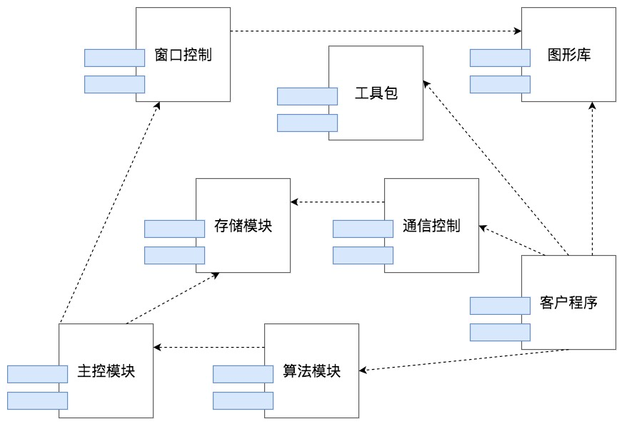
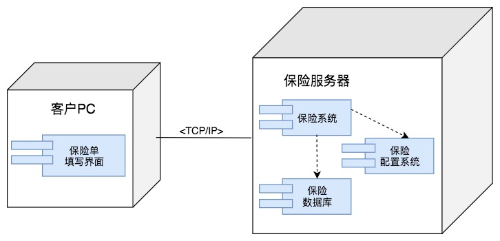
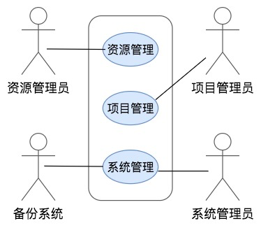
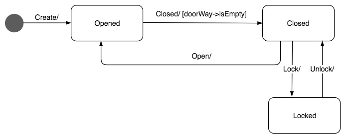
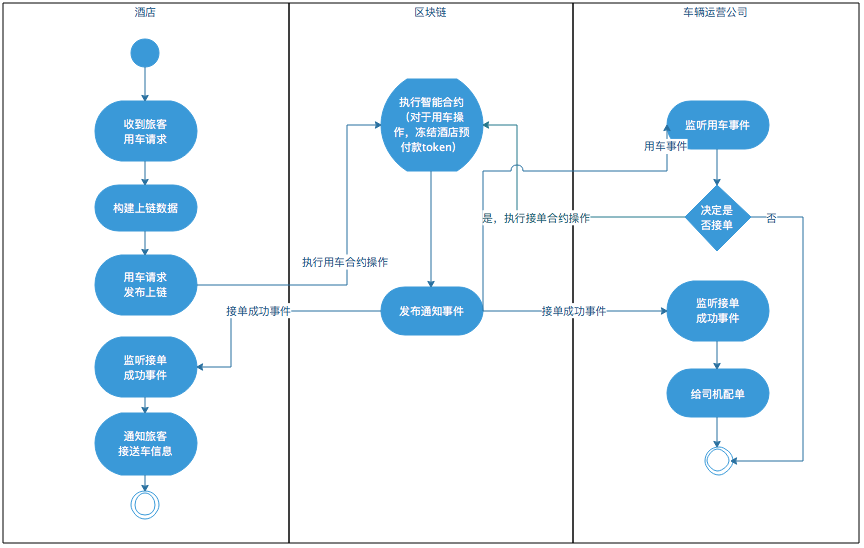

- 00 开篇词 掌握软件开发技术的第一性原理.md.html
- 01 程序运行原理：程序是如何运行又是如何崩溃的？.md.html
- 02 数据结构原理：Hash表的时间复杂度为什么是O(1)？.md.html
- 03 Java虚拟机原理：JVM为什么被称为机器（machine）？.md.html
- 04 网络编程原理：一个字符的互联网之旅.md.html
- 05 文件系统原理：如何用1分钟遍历一个100TB的文件？.md.html
- 06 数据库原理：为什么PrepareStatement性能更好更安全？.md.html
- 07 答疑 Java Web程序的运行时环境到底是怎样的？.md.html
- 07 编程语言原理：面向对象编程是编程的终极形态吗？.md.html
- 08 软件设计的方法论：软件为什么要建模？.md.html
- 09 软件设计实践：如何使用UML完成一个设计文档？.md.html
- 10 软件设计的目的：糟糕的程序员比优秀的程序员差在哪里？.md.html
- 11 软件设计的开闭原则：如何不修改代码却能实现需求变更？.md.html
- 12 软件设计的依赖倒置原则：如何不依赖代码却可以复用它的功能？.md.html
- 13 软件设计的里氏替换原则：正方形可以继承长方形吗？.md.html
- 14 软件设计的单一职责原则：为什么说一个类文件打开最好不要超过一屏？.md.html
- 15 软件设计的接口隔离原则：如何对类的调用者隐藏类的公有方法？.md.html
- 16 设计模式基础：不会灵活应用设计模式，你就没有掌握面向对象编程.md.html
- 17 设计模式应用：编程框架中的设计模式.md.html
- 18 反应式编程框架设计：如何使程序调用不阻塞等待，立即响应？.md.html
- 19 组件设计原则：组件的边界在哪里？.md.html
- 20 答疑 对于设计模式而言，场景到底有多重要？.md.html
- 20 领域驱动设计：35岁的程序员应该写什么样的代码？.md.html
- 21 分布式架构：如何应对高并发的用户请求.md.html
- 22 缓存架构：如何减少不必要的计算？.md.html
- 23 异步架构：如何避免互相依赖的系统间耦合？.md.html
- 24 负载均衡架构：如何用10行代码实现一个负载均衡服务？.md.html
- 25 数据存储架构：如何改善系统的数据存储能力？.md.html
- 26 搜索引擎架构：如何瞬间完成海量数据检索？.md.html
- 27 微服务架构：微服务究竟是灵丹还是毒药？.md.html
- 28 高性能架构：除了代码，你还可以在哪些地方优化性能？.md.html
- 29 高可用架构：我们为什么感觉不到淘宝应用升级时的停机？.md.html
- 30 安全性架构：为什么说用户密码泄漏是程序员的锅？.md.html
- 31 大数据架构：大数据技术架构的思想和原理是什么？.md.html
- 32 AI与物联网架构：从智能引擎到物联网平台.md.html
- 33 区块链技术架构：区块链到底能做什么？.md.html
- 33 答疑 互联网需要解决的技术问题是什么？.md.html
- 34 技术修炼之道：同样工作十几年，为什么有的人成为大厂架构师，有的人失业？.md.html
- 35 技术进阶之道：你和这个星球最顶级的程序员差几个等级？.md.html
- 36 技术落地之道：你真的知道自己要解决的问题是什么吗？.md.html
- 37 技术沟通之道：如何解决问题？.md.html
- 38 技术管理之道：你真的要转管理吗？.md.html
- 38 答疑 工作中的交往和沟通，都有哪些小技巧呢？.md.html
- 加餐 软件设计文档示例模板.md.html
- 结束语 期待未来的你，成为优秀的软件架构师.md.html
- 捐赠
09 软件设计实践：如何使用UML完成一个设计文档？
在上一篇文章中，我们讨论了为什么要建模，以及建模的4+1视图模型，4+1视图模型很好地向我们展示了如何对一个软件的不同方面用不同的模型图进行建模与设计，以完整描述一个软件的业务场景与技术实现。但是软件开发是有阶段性的，在不同的开发阶段用不同的模型图描述业务场景与设计思路，在不同阶段输出不同的设计文档，对于现实的开发更有实践意义。
软件建模与设计过程可以拆分成需求分析、概要设计和详细设计三个阶段。UML规范包含了十多种模型图，常用的有7种：类图、序列图、组件图、部署图、用例图、状态图和活动图。下面我们讨论如何画这7种模型图，以及如何在需求分析、概要设计、详细设计三个阶段使用这7种模型输出合适的设计文档。
类图
类图是最常见的UML图形，用来描述类的特性和类之间的静态关系。
一个类包含三个部分：类的名字、类的属性列表和类的方法列表。类之间有6种静态关系：关联、依赖、组合、聚合、继承、泛化。把相关的一组类及其关系用一张图画出来，就是类图。
类图主要是在详细设计阶段画，如果类图已经设计出来了，那么开发工程师只需要按照类图实现代码就可以了，只要类方法的逻辑不是太复杂，不同的工程师实现出来的代码几乎是一样的，这样可以保证软件的规范、统一。在实践中，我们通常不需要把一个软件所有的类都画出来，把核心的、有代表性的、有一定技术难度的类图画出来，一般就可以了。
除了在详细设计阶段画类图，在需求分析阶段，也可以将关键的领域模型对象用类图画出来，在这个阶段中，我们需要关注的是领域对象的识别及其关系，所以用简化的类图来描述，只画出类的名字及关系就可以了。
序列图
类图之外，另一种常用的图是序列图，类图描述类之间的静态关系，序列图则用来描述参与者之间的动态调用关系。
每个参与者有一条垂直向下的生命线，这条线用虚线表示，而参与者之间的消息也从上到下表示其调用的前后顺序关系，这正是序列图这个词的由来。每个生命线都有一个激活条，只有在参与者活动的时候才是激活的。
序列图通常用于表示对象之间的交互，这个对象可以是类对象，也可以是更大粒度的参与者，比如组件、服务器、子系统等，总之，只要是描述不同参与者之间交互的，都可以使用序列图，也就是说，在软件设计的不同阶段，都可以画序列图。
组件图
组件是比类粒度更大的设计元素，一个组件中通常包含很多个类。组件图有的时候和包图的用途比较接近，组件图通常用来描述物理上的组件，比如一个JAR，一个DLL等等。在实践中，我们进行模块设计的时候更多的是用组件图。
 组件图描述组件之间的静态关系，主要是依赖关系，如果想要描述组件之间的动态调用关系，可以使用组件序列图，以组件作为参与者，描述组件之间的消息调用关系。
因为组件的粒度比较粗，通常用以描述和设计软件的模块及其之间的关系，需要在设计早期阶段就画出来，因此组件图一般用在概要设计阶段。
部署图
部署图描述软件系统的最终部署情况，比如需要部署多少服务器，关键组件都部署在哪些服务器上。
 部署图是软件系统最终物理呈现的蓝图，根据部署图，所有相关者，诸如客户、老板、工程师都能清晰地了解到最终运行的系统在物理上是什么样子，和现有的系统服务器的关系，和第三方服务器的关系。根据部署图，还可以估算服务器和第三方软件的采购成本。
因此部署图是整个软件设计模型中，比较宏观的一种图，是在设计早期就需要画的一种模型图。根据部署图，各方可以讨论对这个方案是否认可。只有对部署图达成共识，才能继续后面的细节设计。部署图主要用在概要设计阶段。
用例图
用例图主要用在需求分析阶段，通过反映用户和软件系统的交互，描述系统的功能需求。
 图中小人形象的元素，被称为角色，角色可以是人，也可以是其他的系统。系统的功能可能会很复杂，所以一张用例图可能只包含其中一小部分功能，这些功能被一个矩形框框起来，这个矩形框被称为用例的边界。框里的椭圆表示一个一个的功能，功能之间可以调用依赖，也可以进行功能扩展。
因为用例图中功能描述比较简单，通常还需要对用例图配以文字说明，形成需求文档。
状态图
状态图用来展示单个对象生命周期的状态变迁。
业务系统中，很多重要的领域对象都有比较复杂的状态变迁，比如账号，有创建状态、激活状态、冻结状态、欠费状态等等各种状态。此外，用户、订单、商品、红包这些常见的领域模型都有多种状态。
这些状态的变迁描述可以在用例图中用文字描述，随着角色的各种操作而改变，但是用这种方式描述，状态散乱在各处，不要说开发的时候容易搞错，就是产品经理自己在设计的时候，也容易搞错对象的状态变迁。
UML的状态图可以很好地解决这一问题，一张状态图描述一个对象生命周期的各种状态，及其变迁的关系。如图所示，门的状态有开opened、关closed和锁locked三种，状态与变迁关系用一张状态图就可以搞定。
 状态图要在需求分析阶段画，描述状态变迁的逻辑关系，在详细设计阶段也要画，这个时候，状态要用枚举值表示，以指导具体的开发。
活动图
活动图主要用来描述过程逻辑和业务流程。UML中没有流程图，很多时候，人们用活动图代替流程图。
 活动图和早期流程图的图形元素也很接近，实心圆代表流程开始，空心圆代表流程结束，圆角矩形表示活动，菱形表示分支判断。
此外，活动图引入了一个重要的概念——泳道。活动图可以根据活动的范围，将活动根据领域、系统和角色等划分到不同的泳道中，使流程边界更加清晰。
活动图也比较有普适性，可以在需求分析阶段描述业务流程，也可以在概要设计阶段描述子系统和组件的交互，还可以在详细设计阶段描述一个类方法内部的计算流程。
使用合适的UML模型构建一个设计文档
UML模型图本身并不复杂，几分钟的时间就可以学习一个模型图的画法。但难的是如何在合适的场合下用正确的UML模型表达自己的设计意图，形成一套完整的软件模型，进而组织成一个言之有物，层次分明，既可以指导开发，又可以在团队内外达成共识的设计文档。
下面我们就从软件设计的不同阶段这一维度，重新梳理下如何使用正确的模型进行软件建模。
在需求分析阶段，主要是通过用例图来描述系统的功能与使用场景；对于关键的业务流程，可以通过活动图描述；如果在需求阶段就提出要和现有的某些子系统整合，那么可以通过时序图描述新系统和原来的子系统的调用关系；可以通过简化的类图进行领域模型抽象，并描述核心领域对象之间的关系；如果某些对象内部会有复杂的状态变化，比如用户、订单这些，可以用状态图进行描述。
在概要设计阶段，通过部署图描述系统最终的物理蓝图；通过组件图以及组件时序图设计软件主要模块及其关系；还可以通过组件活动图描述组件间的流程逻辑。
在详细设计阶段，主要输出的就是类图和类的时序图，指导最终的代码开发，如果某个类方法内部有比较复杂的逻辑，那么可以用画方法的活动图进行描述。
下一篇文章我会通过一个示例模板为你展示设计文档的写法和UML模型在文档中的应用。
小结
UML建模可以很复杂，也可以很简单，简单掌握类图、时序图、组件图、部署图、用例图、状态图、活动图这7种模型图，根据场景的不同，灵活在需求分析、概要设计和详细设计阶段绘制对应的模型图，可以实实在在地做好软件建模，搞好系统设计，做一个掌控局面、引领技术团队的架构师。
画UML的工具，可以是很复杂的，用像EA这样的大型软件设计工具，不过是收费的，也可以是draw.io这样在线、免费的工具，一般来说，都建议先从简单的用起。
思考题
你现在开发的软件是否会用到UML建模呢？如果没有，你觉得应该画哪些UML模型？又该如何画呢？
欢迎你在评论区写下你的思考，我会和你一起交流，也欢迎把这篇文章分享给你的朋友或者同事，一起交流进步吧！
© 2019 - 2023 Liangliang Lee. Powered by gin and hexo-theme-book.